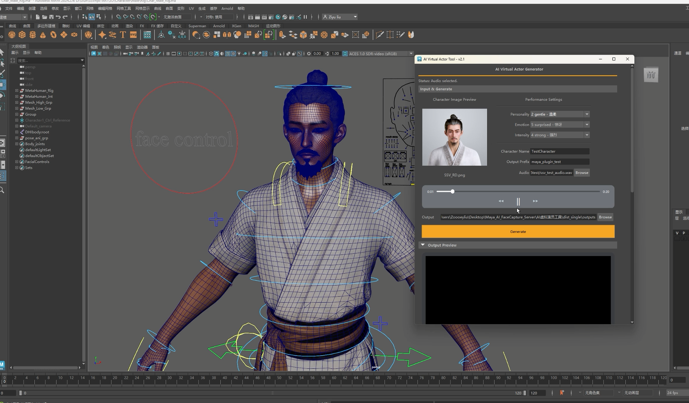
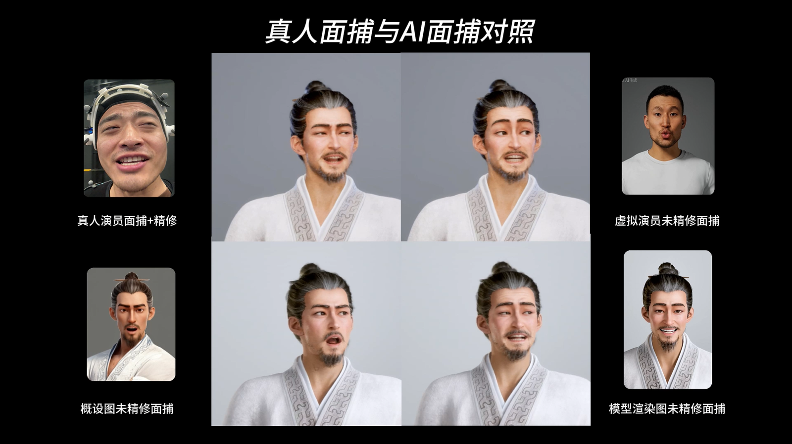

Interactive Design
Existing Work
Current portfolio card
The proposed card sits near the front of the carousel because it is the strongest bridge between technical art, production tooling, and real-time character work.

From character image and voice to engine-ready facial animation.

I designed and developed an end-to-end workflow that converts a character image, voice, and structured performance direction into a generated performance and engine-ready facial animation data.